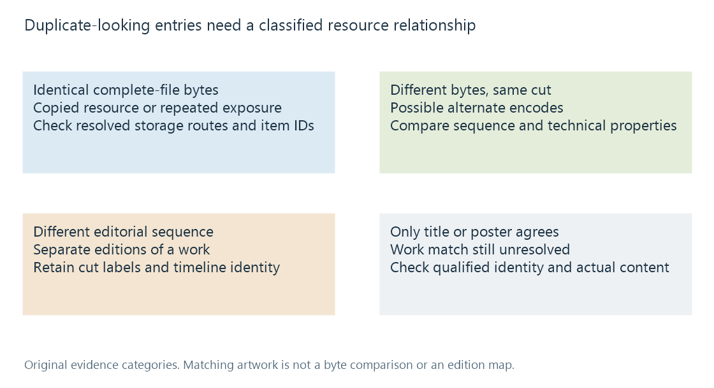

Duplicate library entries
Duplicate library entries require comparing catalogue identity, edition and actual resource relationships rather than relying on matching titles or posters.
Two identical-looking posters can represent an accidental duplicate, two useful encodes, two cuts, or two different works that were matched incorrectly. The display is evidence about presentation, not proof that the underlying resources are interchangeable.
The first useful question is therefore “What is duplicated?” It may be the bytes, the work description, a storage route or only the visible label.
Four situations that look similar
| Observation | Possible relationship | Evidence that resolves it |
|---|---|---|
| Different paths, equal complete-file hashes | Copied resources | Byte equality plus confirmation of the represented work |
| Different bytes, same cut and timeline | Alternate encodes | Edition, scene sequence and technical comparison |
| Same provider movie ID, different sequence | Different cuts of one work | Edition and timeline comparison |
| One resource reachable through two configured routes | Repeated catalogue exposure | Resolved paths, storage mappings and library scope |

The routes in the diagram are explanatory choices, not an automatic Emby deduplication algorithm.
A collection can also make a movie appear in more than one browsing context without duplicating either the item or file. Count the underlying item identities and resources before treating repeated visibility as an error.
Byte equality and semantic equality
A cryptographic hash such as SHA-256 is a compact fingerprint of bytes. Matching hashes over the complete files provide extremely strong evidence that the resource contents agree. Different paths can still locate such copies.
A hash difference is less informative. Retagging a file, changing its container packaging or re-encoding it can change the complete-file bytes while preserving the same cut. A hash cannot answer whether two different resources should be grouped as alternate versions.
Names and provider IDs operate at the other end of the evidence scale. They describe or identify catalogue entities. Two cuts can share a movie ID, while two unrelated films can acquire the same poster after a bad match. An identity mistake must be corrected at the descriptive layer before a resource relationship can be assessed confidently.
Investigating two entries
Suppose two entries named Night Ferry appear in a library. One offers a 108-minute 1080p source; the other offers a 121-minute 4K source.
The difference in resolution suggests a possible version relationship. The difference in runtime raises another question. In this fictional case, checking the sequence reveals that the longer source contains a 13-minute insert. The entries describe two cuts, not just a higher-resolution copy.
That distinction affects the proposed result. A work-level presentation might collect both choices under one film. It should still retain the cut labels and recognize that resume positions, subtitles and derived previews can differ. Collapsing resource identity would lose useful information even if the browsing grid became less crowded.
Now suppose both resources instead have the same complete-file hash. The explanation is likely copied bytes or overlapping exposure, but the current catalogue state still matters. Which item does each playlist refer to? Where is viewer history associated? Are the records in different configured library contexts? Those relationships can outlive the superficial poster duplication.
Why refreshing the picture is not a duplicate test
A metadata refresh can change a description or image. It cannot turn two files into one, nor establish their scene correspondence merely by retrieving a shared work record.
Conversely, changing a path can alter recognition while leaving the film's work identity unchanged. Library scanning has to reconcile that resource change with the catalogue. Reappearance after a scan can reflect unresolved storage or identity evidence rather than a stubborn artwork cache.
See Also
- Media item identity
- Alternate media versions
- Movie editions and cuts
- Library scanning and catalogue reconciliation
- Media identification